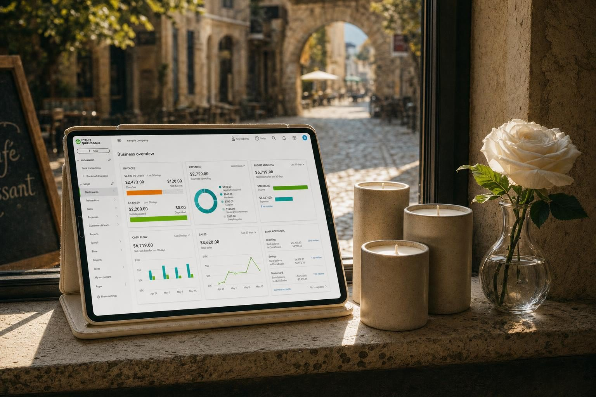
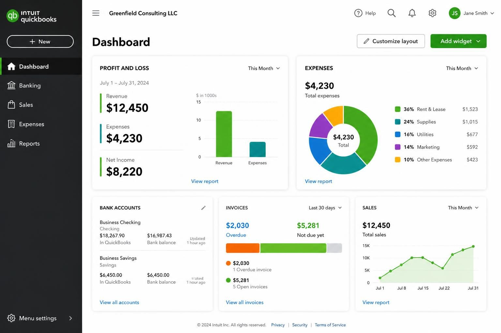
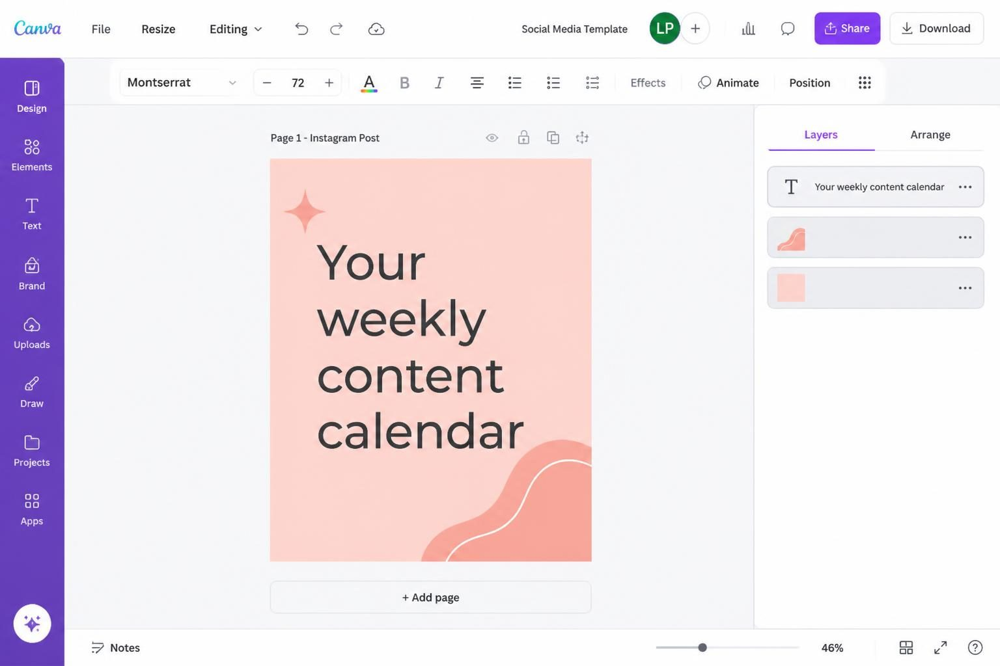
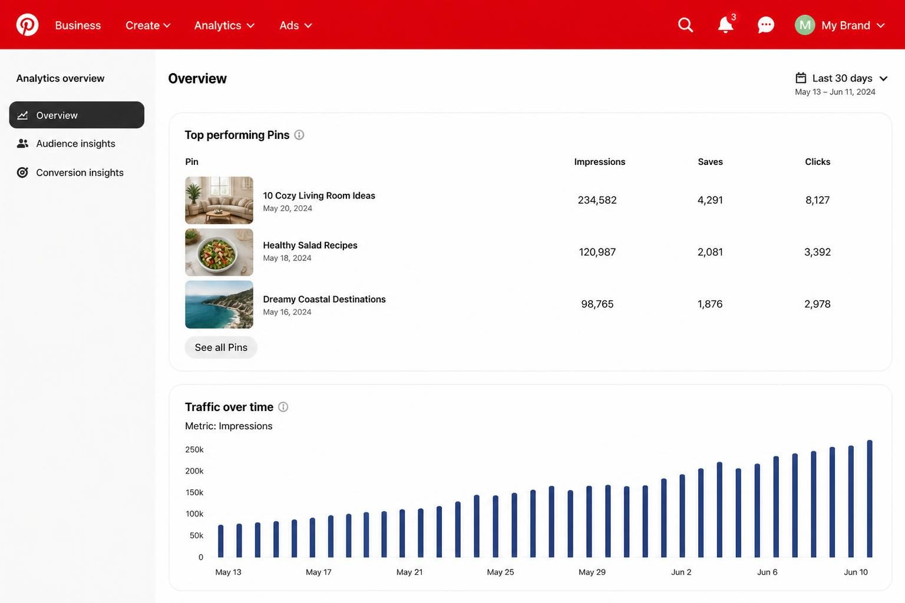
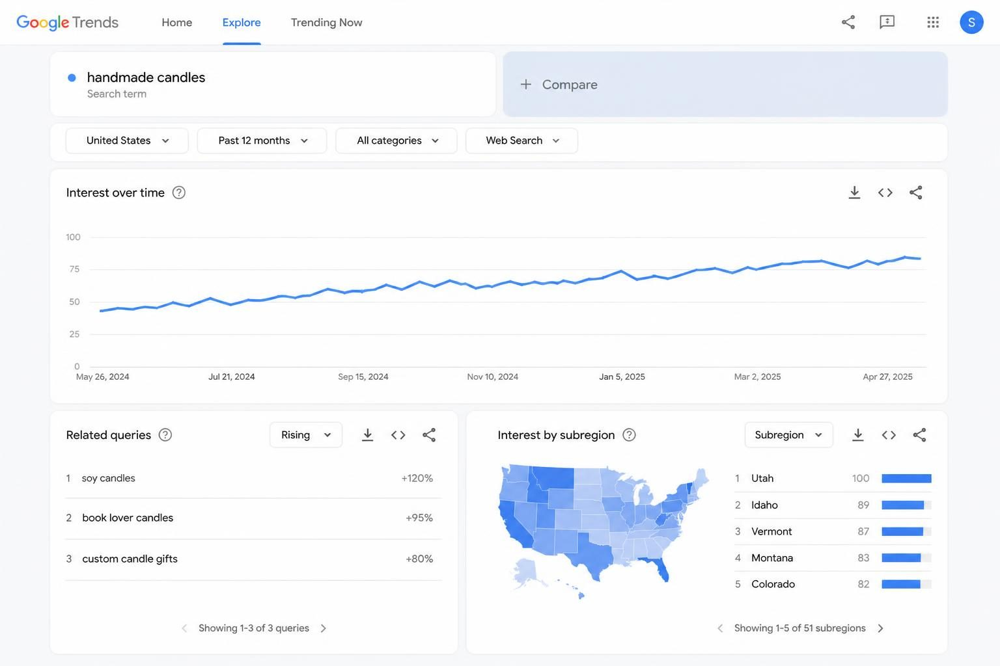

SMALL BUSINESS IDEAS FOR WOMEN: 12 OPTIONS WITH REAL EARNING POTENTIAL IN 2026

The best small business ideas for women in 2026 share three things: low startup costs, flexibility to scale around your life, and real earning potential from day one. Not someday. Not after you quit your job. Now.
One in four women plan to start a business this year. If you are reading this, you are probably one of them. Maybe you have been researching for months. Maybe you have a notes app full of half-formed ideas and browser tabs you keep meaning to read. Maybe you just know you want something of your own - income you control, work that fits your schedule, a business that does not require asking permission.
Here is what most "business ideas for women" posts get wrong: they give you a list of 50 vague suggestions with no real information about what it takes to start, what you will earn, or how to get your first customer. That is not helpful. That is just more noise.
This post is different. I am giving you 12 specific business ideas with real startup costs, earning potential, and the exact steps to land your first paying client or customer. These are businesses women are building right now - not theoretical ideas that sound good on paper.
Let's get into it.
SERVICE-BASED BUSINESSES THAT START FAST
Service businesses are the fastest way to generate income because you are selling your time and skills directly - no inventory, no product development, no waiting for manufacturing.
Virtual assistant with a specialty niche. Generic VA work pays $15-20/hour and is a race to the bottom. But a VA who specializes - podcast support, real estate transaction coordination, course launch management - charges $35-75/hour. Startup cost: $150-300 (scheduling software, project management tool, basic website). First clients: reach out to 10 podcasters, course creators, or real estate agents directly with a specific offer. Earning potential: $2,000-6,000/month part-time, $5,000-12,000/month full-time.
What makes this work is the niche. When you specialize in podcast support (show notes, guest outreach, audiogram creation, episode scheduling), you become the obvious choice for podcast hosts who do not want to explain their workflow to a generalist.
Social media management for local businesses. Local restaurants, dentists, yoga studios, and boutiques need consistent social media but cannot afford agencies. You manage 3-5 accounts, batch content monthly, and charge a flat retainer. Startup cost: $100-200 (Canva Pro, scheduling tool). First clients: walk into 10 local businesses with a one-page proposal showing what their Instagram could look like. Earning potential: $1,500-4,000/month for 10-15 hours/week.
Bookkeeping for small businesses. If you are organized with numbers, this is quietly one of the most in-demand services. Small business owners hate doing their own books. Startup cost: $500-1,000 (QuickBooks certification, software subscriptions). First clients: reach out to freelancers and solopreneurs in Facebook groups - they need this desperately. Earning potential: $3,000-8,000/month once you have 10-15 monthly clients.

Wedding day coordinator. You do not plan weddings for a year - you show up on the day and manage everything for 8-10 hours. Vendors, timeline, logistics, emergencies. Startup cost: $200-400 (insurance, basic supplies). First clients: connect with wedding photographers and ask for referrals - they work with couples who need this. Earning potential: $1,200-2,500 per wedding, 2-4 weddings per month during season.
PRODUCT-BASED BUSINESSES FOR MAKERS AND CREATORS
If you prefer making things to managing clients, product businesses offer income that is not directly tied to your hours.
Handmade products on Etsy. Candles, jewelry, ceramics, knitted items, soap - if you can make it well, there is a market. Startup cost: $500-2,000 (materials, packaging, Etsy fees, shipping supplies). First customers: Etsy search optimization, Pinterest pins linking to listings, local markets for visibility. Earning potential: $500-3,000/month side business ideas for women [https://www.switzertemplates.com/post/side-business-ideas-for-women], $5,000-15,000/month full-time with a proven product.
The key is finding your specific angle. A woman making soy candles in her kitchen started with $800 in supplies. She focused on one thing - candles for book lovers with scents inspired by novels. Within a year, she was selling 200 candles monthly and had hired part-time help.
Print-on-demand apparel or products. You design, a print partner (Printful, Printify) handles production and shipping. Zero inventory. Startup cost: $200-500 (mockup photography, initial ad spend). First customers: targeted Pinterest ads, Instagram content, TikTok showing your designs. Earning potential: $500-2,000/month initially, scaling to $5,000+ with winning designs.
The margin matters here. A t-shirt that costs $12 to produce and sells for $28 gives you $16 profit. Sell 100 monthly and that is $1,600 for designs you created once.
Digital products - templates, planners, guides. Create once, sell forever. Social media templates, budget planners, wedding planning guides, business checklists. Startup cost: $50-200 (Canva Pro, Gumroad or Etsy listing fees). First customers: Pinterest marketing (critical for digital products), Instagram content showing the product in use. Earning potential: $500-5,000/month passive once you have a catalog.

LOOKING PROFESSIONAL FROM DAY ONE
Here is something most new business owners get wrong: they wait until they are "established" to invest in how their business looks. But your potential customers are making decisions about your credibility before they ever contact you.
I spent years watching talented women lose clients to competitors who simply looked more professional online. Same skills, same prices - but one had a cohesive brand and a real website, and the other had a free Canva logo and a Linktree.
If you are starting a service-based business and want to look established from day one, the premade Wix website templates for service providers at Switzertemplates give you a complete, professional website you can customize in a day - not weeks. These are the same templates used by over 27,000 coaches, consultants, and service providers worldwide.
LOCAL SERVICE BUSINESSES THAT PAY IMMEDIATELY
Do not overlook local businesses. They require minimal startup costs, have immediate demand, and build recurring revenue faster than online business ideas for women [https://www.switzertemplates.com/post/online-business-ideas-for-women]es.
House cleaning with premium positioning. Instead of competing on price ($25/hour is a race to the bottom), position as eco-friendly deep cleaning and charge $45-60/hour. Startup cost: $200-400 (cleaning supplies, insurance). First clients: Nextdoor posts, neighborhood Facebook groups, flyers in local coffee shops. Earning potential: $3,000-6,000/month part-time, $8,000-15,000/month full-time with a small team.
Pet sitting and dog walking. Rover takes a 20% cut but handles bookings and insurance. Eventually move clients to direct booking. Startup cost: $100-200 (Rover fees, basic supplies). First clients: Rover profile, neighborhood word of mouth. Earning potential: $1,500-4,000/month part-time.
Personal shopping and errand services. Busy professionals and elderly clients need someone to handle grocery shopping, returns, gift buying, and errands. Startup cost: $50-100 (mileage tracking app, business cards). First clients: Nextdoor, local senior centers, busy parent Facebook groups. Earning potential: $20-35/hour, $2,000-5,000/month.
This business is especially strong in 2026. With AI handling more of people's work tasks, personal time has become more valuable - and people will pay to have errands handled.
ONLINE BUSINESSES THAT SCALE
These require more upfront setup but offer income that grows without linear time investment.
Online course or membership. Package your expertise into a course people buy repeatedly, or a membership they pay monthly. Startup cost: $200-1,000 (course platform, basic equipment for recording). First customers: your existing audience (even small), targeted content marketing, podcast guest appearances. Earning potential: $1,000-10,000+/month depending on audience size and pricing.
A former teacher created a course teaching other teachers how to use AI tools effectively. Price: $197. She sold 50 copies in the first month through her small email list and a few strategic Facebook group posts. That is $9,850 from content she recorded once.
Affiliate marketing through content. Build an audience through blogging, YouTube, or Pinterest - then earn commissions recommending products you use. Startup cost: $100-300 (domain, hosting, basic tools). First income: typically 3-6 months of consistent content before meaningful affiliate revenue. Earning potential: $500-5,000/month once established.

Subscription box curation. Curate products from small makers into a themed monthly box. You source wholesale (50% off retail), package beautifully, and charge a premium. Startup cost: $1,000-3,000 (initial inventory, packaging, shipping supplies). First customers: Instagram content, influencer seeding (send free boxes for reviews), Pinterest marketing. Earning potential: $2,000-10,000/month with 50-200 subscribers.
HOW TO VALIDATE YOUR IDEA BEFORE YOU INVEST
The biggest mistake new business owners make is building something nobody wants to buy. Here is how to test demand before spending real money:
Step 1: Talk to 5 potential customers. Not friends. Not family. People who might pay for what you are offering. Ask: What is frustrating about this problem? What have you tried? What would you pay for a solution? Listen more than you talk.
Step 2: Check existing demand. Use free tools to see if people are already searching for what you offer:
- Google Trends for search volume patterns
- Etsy search to see if similar products sell
- Upwork and Fiverr to see if services like yours have demand
- Pinterest search to see what content exists in your space
Step 3: Pre-sell before you build. Offer your service or product at a founding discount to 5-10 people before you fully build it. If nobody buys, you saved yourself months of wasted effort.
Step 4: Calculate your true startup costs. List every expense: supplies, software, website, business license, packaging, initial inventory. Add 20% buffer. Know exactly what you need before you start.

THE FIRST 30 DAYS: FROM IDEA TO FIRST SALE
Most people spend months "preparing" to launch and never start. Here is a compressed timeline that forces action:
Days 1-7: Define your offer.
- Choose ONE specific thing to sell - not five variations
- Write a clear description of who it is for and what problem it solves
- Set your price (research competitors, then price based on value, not fear)
Days 8-14: Build your minimum presence.
- Choose ONE platform to start (Etsy for products, Instagram for local services, Upwork for freelance)
- Set up payment processing (Stripe, Square, or PayPal)
- Create a simple way for people to contact you or buy
Days 15-21: Get visible.
- Post your offer in 3 relevant communities (Facebook groups, Reddit, local networks)
- Reach out directly to 10 potential clients or customers with a specific, personalized message
- Ask your existing network if they know anyone who needs what you offer
Days 22-30: Close your first sale.
- Follow up with everyone who showed interest
- Offer a founding customer discount for the first 5 buyers
- Get a testimonial from your first customer immediately after delivery
The goal is not perfection. The goal is proof. Ten paying customers proves you have something real. Then you can optimize.
COMMON MISTAKES THAT KILL NEW BUSINESSES
After watching thousands of women start businesses through my templates and products, these are the patterns I see again and again:
Trying to serve everyone. "My target market is women aged 25-55 who want to improve their lives" is not a target market. The more specific you get, the easier it is for the right people to find you - and trust you immediately.
Waiting until everything is perfect. Your logo does not need to be final. Your website does not need every page built. Your offer does not need ten variations. Launch with the minimum viable version and improve based on real feedback.
Ignoring the numbers. If you do not know your profit margin per sale, your customer acquisition cost, and your time investment per client - you do not know if your business works. Track from day one.
Building on rented land only. Instagram followers are not yours. The algorithm changes, reach drops, accounts get suspended. Build an email list and a website you own alongside your social presence.
FREQUENTLY ASKED QUESTIONS
What is the best business to start as a woman?
The best business depends on your skills, time availability, and startup capital - but service businesses like virtual assistance, social media management, and bookkeeping offer the fastest path to income because you can start immediately with minimal investment. Product businesses require more upfront setup but offer better scalability over time.
What business has the highest success rate?
Businesses that solve a specific problem for a specific audience and validate demand before launching have the highest success rates. The business model matters less than whether you have confirmed people will pay before you build. Service businesses with low overhead and recurring client relationships tend to be more stable.
What is the easiest business to start right now?
Service-based businesses that use skills you already have are the easiest to start because there is no inventory, no product development, and no waiting for manufacturing. If you can clean, organize, write, design, manage social media, or handle administrative tasks - you can start today.
What is the best business to start with $1,000?
With $1,000, you can start most service businesses with room for marketing. Strong options include: virtual assistant ($300 startup, $700 for marketing), social media management ($200 startup), handmade products on Etsy ($600-800 for supplies and initial inventory), or a local cleaning service ($400 for supplies and insurance). Digital products like templates require even less - often under $200.
How do women business owners find their first clients?
Direct outreach works faster than waiting for people to find you. Reach out to 10-20 potential clients with a specific, personalized message explaining how you can help them. Post in 3-5 relevant Facebook groups or communities. Ask your existing network for referrals. Offer a founding customer discount to get your first testimonials.
Can I start a business while working full-time?
Yes - this is the safest approach. Most successful businesses started as side projects. Build in the margins (early mornings, evenings, weekends) until you have proven demand and consistent income. Ten hours per week is enough to validate most business ideas before making any major life changes.
WHAT MAKES A BUSINESS IDEA WORK
The difference between women who build real businesses and those who stay stuck in the research phase comes down to three things:
Specificity. Not "I help people with their businesses" but "I manage Pinterest accounts for product-based businesses." Not "I make jewelry" but "I make minimalist gold jewelry for women who want everyday pieces that last." The narrower your focus, the easier everything else becomes - marketing, pricing, positioning.
Systems over hustle. The businesses that scale are the ones with repeatable processes. Document how you onboard clients. Create templates for common tasks. Automate what you can. The goal is not to work more hours - it is to make each hour more valuable.
Looking legitimate from day one. This is not about vanity. Your potential customers are making decisions about your credibility in seconds. A cohesive brand, a professional website, and consistent presentation across platforms builds the trust that makes people buy.
The best small business ideas for women in 2026 are not complicated. They are specific, low-risk, and built around skills you already have. Pick one. Validate it. Launch before you feel ready. Everything else is noise. 📥
Let me know in the comments below if you want me to cover any branding or marketing topics in more depth, and I'll make sure to create a blog post about it in the future.
If you want Pinterest to drive consistent traffic to your business — without spending months learning pin strategy yourself — Jane's done-for-you Pinterest marketing service handles strategy, pin creation, and scheduling so you can focus on running your business.